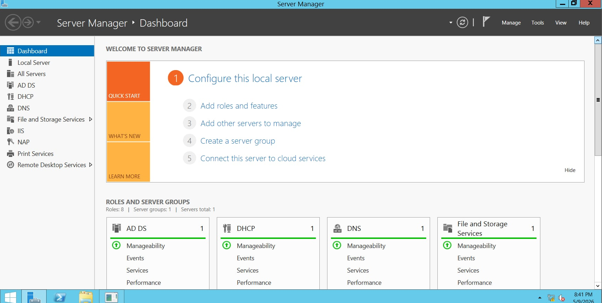

1
Domain Controller Setup
Configure server as Domain Controller and join all 40 client computers to the domain.
View ProcedureA computer lab network system designed to manage 40 computers efficiently using Active Directory, DHCP, and Group Policy for easy setup, control, and monitoring.
View Requirements →Comprehensive Windows Server 2012 deployment featuring Active Directory Domain Services, DHCP, Group Policy Objects, roaming profiles, printer sharing, and remote administration for a production computer laboratory environment.

The people behind the Windows Server 2012 Lab Network project
Click each requirement to view full procedures and implementation details:
Configure server as Domain Controller and join all 40 client computers to the domain.
View ProcedureAssign static IP to server and configure DHCP for automatic client IP distribution.
View ProcedureCreate teacher and student accounts organized using Organizational Units (OUs).
View ProcedureSchedule automatic shutdown of all client computers at 11:30 AM daily.
View ProcedureRestrict user login based on assigned class schedules.
View ProcedureLimit students to their assigned computer only.
View ProcedureCreate secure home folders with 100MB storage limit.
View ProcedureAllow teachers limited control over student accounts in their class.
View ProcedureBlock removable storage access for students via Group Policy.
View ProcedureDisable shutdown and restart options for student accounts.
View ProcedureEnable roaming profiles with restricted desktop settings.
View ProcedureRestrict network access for selected classes and disable USB for students.
View ProcedureEnable customizable roaming profiles for teachers.
View ProcedureAllow remote management of the server using RDP and RSAT tools.
View ProcedureConfigure shared printer with class-based priority and scheduling.
View ProcedureDeploy operating systems remotely using WDS or RIS.
View ProcedureDeploying the Windows Server 2012 Lab Network was a rewarding yet demanding experience that pushed our team to apply classroom knowledge in a real-world infrastructure setting. From configuring Active Directory Domain Services and setting up DHCP scopes, to designing Organizational Units and enforcing Group Policy Objects, every requirement demanded both precision and teamwork. One of our most significant hurdles was resolving IP address conflicts between statically assigned server addresses and the DHCP pool — a problem we traced and corrected through careful scope exclusion configuration. Similarly, GPO inheritance conflicts required us to restructure our OU hierarchy and make deliberate use of policy blocking and enforcement flags to ensure the right restrictions reached the right users.
Beyond the technical configurations, this project deepened our understanding of how enterprise network environments are managed at scale. Implementing roaming profiles for both students and teachers highlighted the importance of balancing user flexibility with administrative control, while setting up remote administration tools like RDP and RSAT gave us first-hand experience with how IT teams manage servers without physical access. The printer sharing and workstation assignment requirements taught us how Group Policy can be a powerful yet sensitive tool — small misconfigurations can cascade across an entire domain. Overall, this project not only strengthened our individual technical skills but also reinforced the value of clear documentation, structured planning, and effective collaboration within a team.
All documentation and tutorials referenced in this project
Windows Server Active Directory Setup
DHCP Server Configuration Tutorial
Active Directory Domain Services Overview
DHCP Server in Windows Server
Install and Configure DHCP Server
Group Policy Management